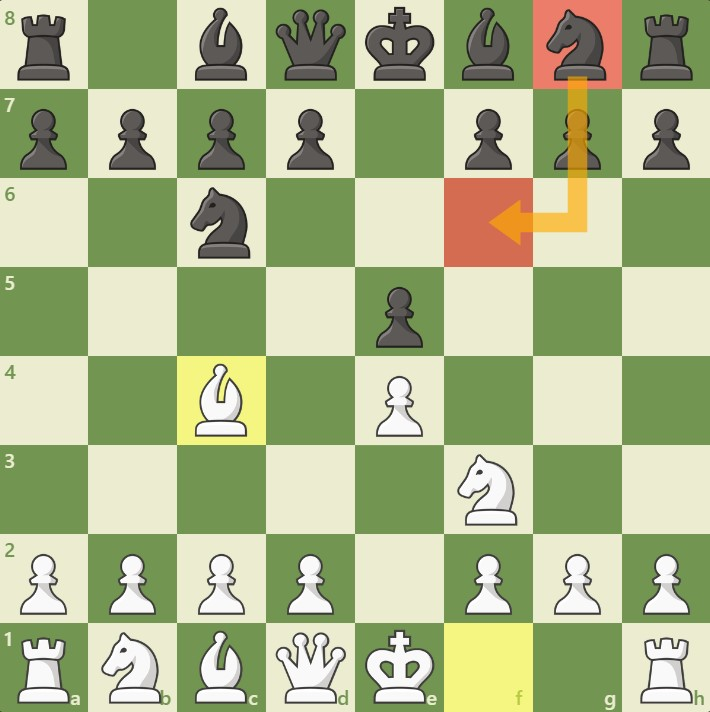

1. Biến thứ nhất: Giuoco piano
2. Biến thứ hai: Phòng thủ hai mã

Đen không tranh chấp trung tâm ngay lập tức mà chuẩn bị triển khai các quân cẩn thận, hướng đến việc xây dựng một thế trận vững chắc, chờ đợi Trắng phạm sai lầm.
Phòng thủ Hungary ít phổ biến ở cấp độ cao do thiếu sự chủ động, nhưng nó phù hợp với người chơi mới bắt đầu hoặc những người yêu thích lối chơi phòng thủ chắc chắn.